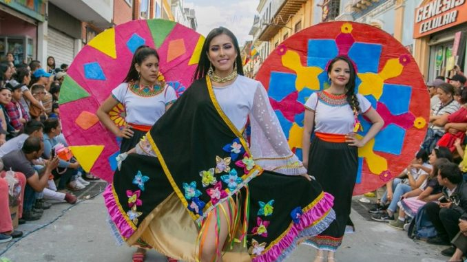
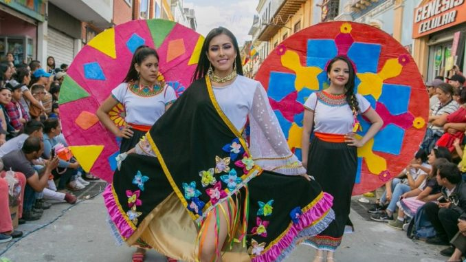

Historia del FIAVL
El Festival de Artes Vivas de Loja (FIAVL) es uno de los eventos culturales más destacados de Ecuador, con un enfoque especial en las artes escénicas. Fundado en 2004, este festival tiene como misión principal promover el intercambio cultural y el desarrollo de las artes vivas a través de una plataforma que incluye teatro, danza, música, performance, circo y otras formas de expresión artística en vivo. Cada año, el FIAVL transforma la ciudad de Loja en un escenario vibrante, donde artistas nacionales e internacionales se reúnen para compartir su talento y enriquecer la escena cultural de la región. El evento se celebra en diferentes espacios públicos y privados de la ciudad, creando una atmósfera única que invita tanto a locales como a visitantes a disfrutar de espectáculos de alta calidad. El FIAVL ha crecido de manera significativa a lo largo de los años, convirtiéndose en uno de los festivales más importantes de América Latina en su género. Su programación no solo incluye presentaciones de artistas y compañías reconocidas internacionalmente, sino también actividades educativas como talleres, conferencias y mesas de trabajo, dirigidas a profesionales y aficionados de las artes. Una de las características distintivas del FIAVL es su enfoque en la interacción directa con la comunidad, acercando las artes vivas a un público diverso, y buscando fortalecer la identidad cultural de Loja, un lugar históricamente vinculado con la música y las tradiciones artísticas. El festival también se ha consolidado como un importante motor del turismo cultural en Loja, atrayendo a miles de visitantes cada año, lo que genera un impacto positivo tanto en la economía local como en la visibilidad internacional de la ciudad como un centro de creatividad y arte. En resumen, el Festival de Artes Vivas de Loja es una celebración de la diversidad cultural y la creatividad, que impulsa la escena de las artes escénicas y fortalece el intercambio artístico y cultural entre artistas y públicos de todo el mundo.
 
